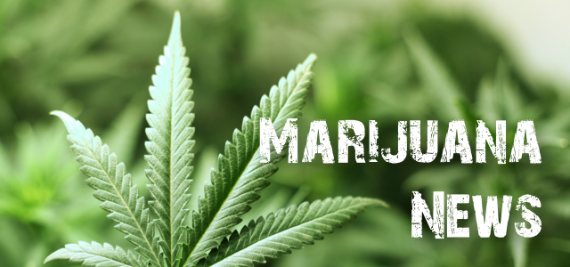

Марихуана поступит в свободную продажу в Уругвае в июле
Наркотик будут продавать в аптеках
Марихуана поступит в свободную продажу в Уругвае в июле этого года.
Об этом заявил заместитель главы администрации президента страны Хуан Андрес Робальо.
По планам правительства страны, со 2 мая начнется регистрация потребителей марихуаны.
«После открытия регистра стартует кампания по разъяснению опасностей употребления марихуаны, а на первые две недели июля запланировано начало ее продаж в аптеках», – цитирует Робальо «РИА Новости».
При этом к продаже наркотика допущены 16 аптечных сетей, еще столько же выразили желание принять участие в программе. Цена на аптечный каннабис составит $1,3 за грамм.
В Израиле декриминализовали употребление марихуаны
Правительство Израиля утвердило предложение о декриминализации употребления марихуаны. Об этом 5 марта сообщает Jerusalem Post.
По новым правилам, впервые пойманный потребитель отделается штрафом вместо тюремного срока. В случае, если он попадется повторно, сумма выплаты удвоится. На третий раз нарушителя могут отправить на реабилитацию, а также лишат водительских прав или лицензии на право владения оружием.
Уголовное дело может быть возбуждено в том случае, если нарушитель попадется в четвертый раз.
Как уточняет «Русская служба Би-би-си», сумма первоначального штрафа составит 270 долларов. При этом Израиль стал первым государством на Ближнем Востоке, где декриминализовано употребление каннабиса. Эта страна является мировым лидером в области изучения применения марихуаны в медицинских целях.
Согласно официальным данным израильского Минздрава, около 25 тысяч человек в стране имеют право на получение медицинской марихуаны. Многие из них страдают онкологическими или психическими заболеваниями.
Украинским властям предложили легализовать марихуану и проституцию, чтобы обеспечить пен
Подумать о легализации проституции, марихуаны, игорного бизнеса и торговли оружием для пополнения Пенсионного фонда предлагает генеральный директор Украинской федерации страхования Галина Третьякова, передает РИА Новости.
По словам Третьяковой, все участвующие в перечисленных видах деятельности "не платят взносов в Пенсионный фонд".
По словам премьера Украины Владимира Гройсмана, дефицит пенсионного фонда составляет более 140 миллиардов гривен (более 5 миллиардов долларов).
© By Valentin Bogdanov